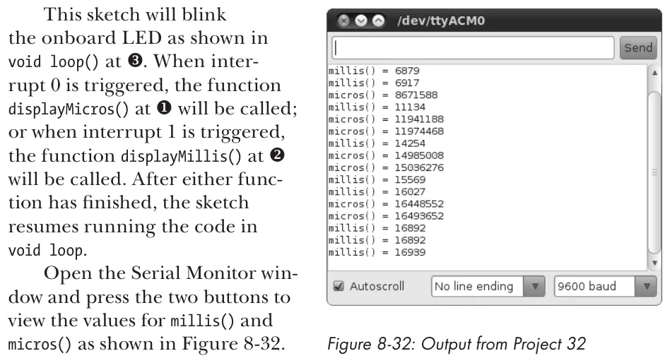

We’ll use the circuit from Project 31 to demonstrate the use of interrupts. Our example will blink the built-in LED every 500 milliseconds, during which time both interrupt pins will be monitored. When the button on interrupt 0 is pressed, the value for micros() will be displayed on the Serial Monitor, and when the button on interrupt 1 is pressed, the value for millis() will be displayed.
The Sketch
Enter and upload the following sketch:
// Project 32 – Using Interrupts
#define LED 13
void setup()
{
Serial.begin(9600);
pinMode(13, OUTPUT);
attachInterrupt(0, displayMicros, RISING);
attachInterrupt(1, displayMillis, RISING);
}
❶ void displayMicros()
{
Serial.write("micros() = ");
Serial.println(micros());
}
❷ void displayMillis()
{
Serial.write("millis() = ");
Serial.println(millis());
}
❸ void loop()
{
digitalWrite(LED, HIGH);
delay(500);
digitalWrite(LED, LOW);
delay(500);
}
This sketch will blink the onboard LED as shown in rupt 0 is triggered, the function or when interrupt 1 is triggered, the function displayMillis() at ❷ will be called. After either function has finished, the sketch resumes running the code in
Open the Serial Monitor window and press the two buttons to view the values for millis() and